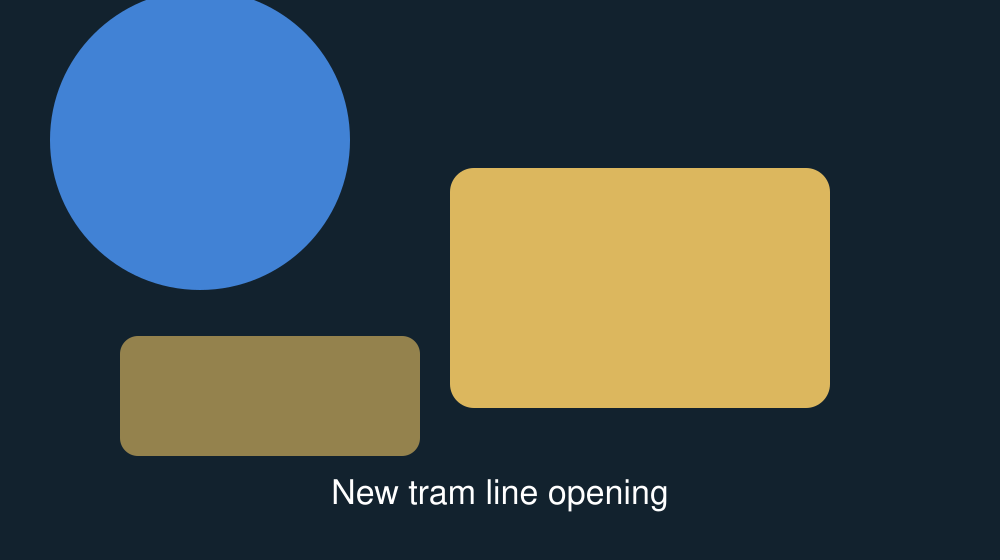
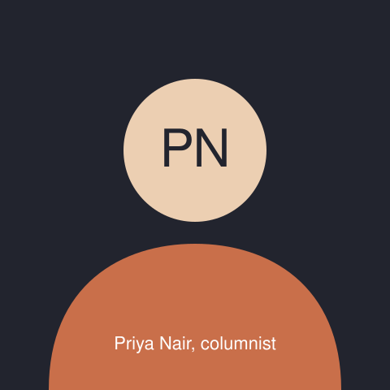

Fifteen years of argument ended at 22:40 last night, with a
casting vote and a promise about the level crossing on Hall Road.
By Daniel Whitmore, Local Government Correspondent. Transport.
Published
,
updated
.
.

The proposed route joins the existing line at Riverside Road.
Photograph: Marta Kowalczyk for The Norwich Chronicle.
Norwich City Council voted 32 to 31 last night to extend the tram line
from Riverside Road to the hospital, with the chair's casting vote
carrying the scheme after a five-hour debate. Construction is due to
begin in and to finish in
2030.
The decisive change came in the final hour, when the transport committee
agreed to keep the Hall Road level crossing open to cars during the
morning peak — a concession the three councillors for Lakenham had asked
for since 2019, and which two of them said had changed their vote.
Objectors say the cost has risen by £41m since the scheme was last
costed in 2023, and that the hospital is already served by four bus
routes. The council's own figures put the increase at £38m, which it
attributes to steel prices and to the redesign of the Hall Road junction.
A judicial review remains possible: the Lakenham Residents' Association
has six weeks to apply, and said last night that it would decide within
a fortnight.
Key facts
Length of the extension
3.4 km, with four new stops.
Cost
£212m, of which £96m comes from central government.
Journey time to the hospital
Eleven minutes from the market, against 26 minutes by bus today.
Construction
to
.
Trees to be removed
Fourteen, with 90 to be planted along the route.
I have voted against this scheme four times. I am voting for it
tonight because the crossing stays open, and because my constituents
have waited eleven years for somebody to write that down.
— Councillor Ruth Ellery, Lakenham, speaking in the chamber
Harvest near Attlebridge, three weeks early. Photograph: Tom Reeve.
Growers across mid-Norfolk are reporting yields 18 to 22% below the
five-year average after eleven weeks with 24 mm of rain. The
Environment Agency has kept the county in drought status and says
restrictions on abstraction will continue into October.
Two large growers told the Chronicle they had already switched next
year's plantings away from barley.
The Sprowston team with Bramble, their winning robot. Photograph:
Sprowston High School.
A team of six year-nine pupils from Sprowston High School beat 84
schools at the national final in Birmingham, with a robot built for
£61 from donated bicycle parts and a plywood chassis cut in the
school's own workshop.
The trust reported 41,208 people waiting at the end of July, down 900
on June. At the current rate of improvement the 18-week target would be
met in 2030 — three years later than the trust's own published plan.
The inspector's report says the treatment works at Whitlingham cannot
take the additional flow before 2031, and that the developer's proposed
interim solution was "not shown to be deliverable".
Fifteen years of argument were never really about the track. They
were about Lakenham.
Comment by Priya Nair, columnist. Published
.
.
This is a column. It reflects the writer's opinion, not the
Chronicle's reporting. Our reporting on the vote is
on the front page.

Priya Nair
I have covered every tram vote since 2011, and I have never once heard
a councillor change their mind because of a cost-benefit ratio. What
changed last night was a sentence about a level crossing, which is
another way of saying that somebody finally wrote down what Lakenham
had been asking for.
That should worry the council more than the £38m. A scheme that takes
fifteen years to include a paragraph about one road is a scheme that
was not listening for fourteen of them.
A penalty from 42 metres in the 79th minute settled it, after the
Harriers had lost a 14-point lead in twenty minutes. It is their first
win over Ipswich since 2022.
A local company takes on a difficult play about the textile trade
and mostly wins.
By Alex Beaumont. Theatre. Published
.
Rated 4 out of 5.
Maddermarket Theatre, until
. Tickets £14 to
£26, with £6 seats for under-25s on Tuesdays.
The staging is spare and the accents are uneven, but the fourth-act
argument between the two sisters is the best twenty minutes of theatre
I have seen in this city this year.
Weather
Norwich forecast for the next five days. Temperatures in degrees
Celsius, rainfall as the chance of rain in any hour.
Day
Conditions
High
Low
Chance of rain
Friday 21 August
Sunny, light north-easterly breeze
26
14
5%
Saturday 22 August
Sunny with high cloud
28
16
10%
Sunday 23 August
Cloudy, humid
27
18
35%
Monday 24 August
Thundery showers, some heavy
23
17
70%
Tuesday 25 August
Brighter, fresher
21
13
20%
Issued at .
Monday's showers are the first forecast rain since
; the hosepipe
restriction stays in place regardless.
The week in numbers
The East Anglia 40 over the past five trading days. Chart: Chronicle
business desk.
Four local indicators, and how they moved this week
Indicator
Now
Change on the week
East Anglia 40 index
4,318
Up 1.4%
Pound against the euro
€1.168
Down 0.3%
Unleaded petrol, city average
136.4p a litre
Up 2.1p
Average house price, Norwich
£276,400
Up 0.2%
Figures taken at the close of business on
. House prices are the rolling three-month average
from the land registry.
Get the Chronicle by email
Send us a tip
Eight journalists cannot be everywhere. If something is happening on your
street, tell us — most of our best stories this year started this way.